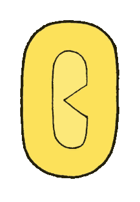

- 
Sobre
Olá
Eu sou formado no Instituto Federal do Rio de Janeiro - Campus Arraial do Cabo.
No início eu fui pra este instituto apenas pela qualidade maior do ensino médio, mas logo peguei interesse na área de programação, principalmente web.
Desde então venho aprendendo HTML, CSS, JavaScript e Java, e faço cursos externos para complementar, tenho interesse em continuar aprendendo programação, eu também tenho interesse em fazer faculdade de analise de sistemas ou ciência da computação, e tendo um bom nível com as linguagens citadas eu vou procurar aprender mais sobre PHP e React, e seguindo em diante.
Procuro uma vaga de estágio em desenvolvimento web pra seguir aprendendo mesmo trabalhando.
Meu nível de aprendizado é intermediário em HTML e CSS, mas mais iniciante em JavaScript e Java.
 Linkedin
Linkedin
 Github
Github